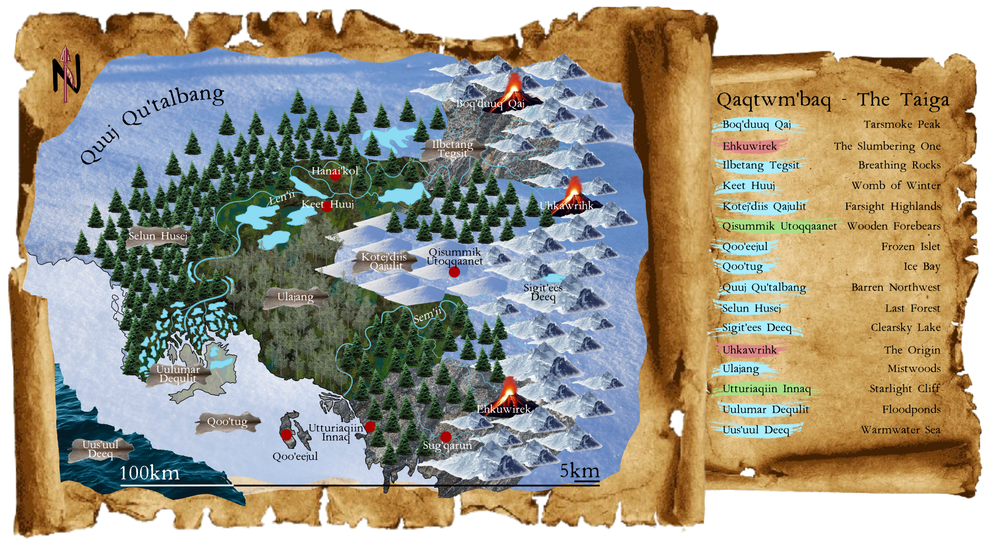

“First it was us, the Hanai Kin, to inhabit this freezing land, the first people able to recognize its bounties centuries ago. Then the Levei Nomads came, stumbling upon the Taiga after losing their ways, and found a new home. Lastly, the Ver'hk Thunder sought refuge in the coldest of lands, persecuted and hunted by ravenous southern empires. In order to seek mutual support and protection, the Taigan Pact among the Three Tribes was born.”
- Siin of the Alder, Hanai Shaman
Read the story!
Novel currently in planning phase!
Estimated time of writing:
Early 2024.
Check the Navigation Menu to explore the setting in the meantime!
“The Taiga is vast and dangerous. May this map help you, newcomer.”

Map of the Taiga with toponyms. Colors indicate the tribes that named each place: Hanai, Levei and Ver’hk.
The Taiga, also called Qaqtwm'baq (IPA: /kak'tum bak/, lit. "cold land") by our people, is the valley where the Three Tribes live. Its harsh climate and long, dark winters discouraged many from settling in here, but despite the challenges we endure and thrive.
Shamans from faraway people (the Levei call them “scientists”) call our valley subarctic oceanic (Ecbd) along the coast (warm summer, severely cold winter) and subarctic continental (Eclc) inland (mild summer, very cold winter). This difference is due to proximity to the sea, which brings warm currents and air during the summer but reverses during the winter. Faraway from the coast these effects are less impactful, resulting in fresher summers and less rigid winters.
“People from outside think we cannot manage. Let them come. Let them see.”
- Siin of the Alder, Hanai Shaman
Hanai are patient hunters, hard workers and good friends. Their craft is dependant on water bodies and their management, which they call waterscaping. They mainly live in the village of Hanai'kol and roam the valley only for susteinance and maintenance tasks. Due to isolation, they lack experience and knowledge about the world outside the valley, but given the harsh environment of the Taiga, they value cooperation and acknowledge that conflict and ostracism can be deadly. After the Levei settle in the valley, they learn many of their skills such as writing, eloquence and conflict de-escalation.
Skills and Professions
Women, more sedentary and practical, learn to live and build with water. Waterscapers, carpenters, potters and architects are mostly women, and they shape the environment symbiotically. Dredgers are a unique profession of the Hanai, mostly taken up by women, who bury food below the swamps to preserve it and then dig them out when needed.
Given their tolerance to carrying and walking, Hanai men are mostly hunters and fishers. Walking around the valley, they explore and observe the surroundings: this makes them creative musicians and poets. Male dredgers are tasked with burials and rituals, taking the role of shamans and spiritual guides.
After contact with the Ver’hk, dragonsouls take up some professions for which there is shortage. Dredgers, actors and musicians are the main dragonsoul roles, as well as scaleworkers and pigmenters to imitate draconic patterns. Nurses and caretakers are also primary dragonsoul professions, arising after contact with other tribes. The Ver’hk allow only the dragonsouls to nurse their eggs and hatchlings.
Myths and Religion
Hanai live and die with the swamp: the wetlands provide what they need, but they also take away what is neglected. Swamps become “doors to the afterlife”, a passage to the world of the dead: dredgers are tasked with burials and funerals to ensure the spirit of the deceased will be preserved in the swamp. In winter, the world of the dead penetrates into the world of the living through the swamp; on the Night of Deadfrost, when the first frost covers the water bodies, the doors to the afterlife are shut and the Hanai “live with the dead”. They believe the afterlife has temporarily replaced the world of the living, and they can meet their ancestors again until the ice melts. Some people “feel one with the dead”, since eating unearthed fermented food can cause botulism. Dying of botulism is interpreted as the person finding their place when the realm of the dead comes.
The balance is reestablished in spring: as the frost recedes, the doors to the afterlife open again and the Hanai are allowed back to the world of the living, when nature blooms and the valley becomes plentiful again. This is celebrated during the Thawing, a festival where the Hanai symbolically swim in the cold ponds as a way to cross back into the world of the living.
Language
Hanai speak a unique language, an altered version of Yeniseian. Here are some example words:
“The Bright Path brought us here. We must follow its lead. This is the will of our ancestors.”
- Pi Paluq, Levei astronomer
Levei are observant, cunning and swift. Travelers by nature, their great experience with foraging, herding animals, dog training and forestry makes them extremely resourceful and knowledgeable. Due to their nomadic culture and sour experiences with other populations, they are skeptic and cold, but also quick-witted and masters of persuasion. After the Endless Wander, they abandon their tradition of male leaders and choose to settle in the Taiga to learn some of the Hanai ways before roaming the Outer World again.
Skills and Professions
Levei men are skilled crafters, tailors, woodworkers, writers, musicians and herders. Everything involving hands and manual skill generally pertains to men, even if many women choose to take up crafts with great results. In the past, Levei men used to lead the tribe by following the stars, but after the tragic Endless Wander they are no longer allowed to.
Women dedicate their experience to forestry and foraging. Generations of knowledge and experiments made them veteran alchemists, pharmacists and brewers, adept observant of both human bodies and plants. After the Endless Wander, women took up the task of astronomy and shamanism, never becoming leaders but instead counselors and holders of wisdom.
After contact with the Ver’hk, dragonsouls take up some professions for which there is shortage. Scouts, astronomers and dancers are the main dragonsoul roles. The most daring Levei dragonsouls learn the unique skills of firebreathing and fire-eating. Nurses and caretakers are also primary dragonsoul professions, arising after contact with other tribes. The Ver’hk allow only the dragonsouls to nurse their eggs and hatchlings.
Myths and Religion
Levei believe that stars are reflections of humans’ future selves, and that their movement indicates the destination of the tribe across the world. They are often called “star-chasers” by other peoples (often with contempt). The trail of stars in the nightsky is referred to as the Bright Path, a road that takes generations to walk through and will eventually lead the Levei to an ascended life “without limits and without effort”. Stars in the Bright Path are believed to be Levei ancestors and dog pets who joined the procession in their afterlife.
Certain astronomical events have particular significance for the Levei. The winter solstice, also known as the Dayless Night, is a moment of celebration, clarity and storytelling, for the Bright Path is fully visible and the world is closest to the sky. The summer solstice, also known as the Nightless Day, is a moment of mourning: the way is lost and the Levei settle and fast until the sun sets again, praying for their ancestors to show the way again.
The two equinoxes are also significant days: during the spring equinox, also known as Blossoming, the Levei scatter around and gather flowers to share with each other and dance all night. The autumn equinox is called Day of the Moving Feet: the Levei get ready to travel once again, packing and gathering their items among music and dances. Items that cannot be brought along for the travel and dead Levei are burned in a bonfire during daylight.
Language
Levei speak a unique language, an altered version of Tunumiisut. Here are some example words:
“Many humans I have seen, torn by hatred and greed. But there is something in this place... this cold makes their heart pure.”
- Utuhkasiir, Ver'hk Broodbearer
Ver’hk, being a clan of dragons, are majestic and powerful, but also fearful and stubborn. Their lifespans are several times longer than humans’, and as a consequence their decision-making and discussions can take months or years. Their memories are immense, but faulty in the short-term: dragons remember centuries with great detail, but struggle with human names and dates. Ver’hk initially lacked the capacity to put themselves in someone else’s shoes: only after contact with humans they learned emotions and empathy.
The only unbreakable rule of all dragon clans is the famous Thunders’ Pride: no dragon can ever be dominated, not even by other dragons. Individuals who transgress this sacred principle (either by imposing their authority over someone else or by allowing someone else to rule over them) are immediately exiled from their clans and only rarely admitted back. Another consequence of this principle is that Ver’hk disapprove being ridden by humans. To them, riding an animal is a sign of submission and oppression, and the humans’ relationship with dogs is seen with contempt.
Fire and Temperature
Ver'hk are huge in size and have thick scales. Unlike other reptilians, they have bodily heat management problems: they need to keep themselves cool at all times or suffer heatstrokes. They hide during the hottest hours and hunt by night, when the air is cooler and warm-blood preys are easier to spot from above. This implies that if a dragon cannot keep themself cool enough, they might combust from within. Younglings tend to disregard these precautions and constantly fly and breathe out fire in order to cool down. This has led to the human belief that dragons are terrifying and dangerous; instead, due to their thermoregulation issues, adult dragons dislike fighting and always seek alternative ways of resolving conflicts, mostly fleeing to more suitable environments or areas.
A Ver'hk fire breath is given by a glans that produces a combustible liquid called sahkri (/sa'χri/, lit. "dragon drool"), which ignites when their overly warm breath is spit out with force. Excess sahkri can be expelled from their noses in liquid form; humans collect it and use it as combustible in their daily life. Dragons have been hunted also because of this prodigious liquid.
Ver'hk experience a form of seasonal hibernation called “brumation”: during late autumn they enter a state of prolonged dormancy, often hiding in secluded place or even underwater. This state persists until late winter, when they wake up from slumber and need to replenish their hunger.
Mating and Rituals
Ver’hk are born without gender; they may pick one upon mating, according to a complex ritual that takes years. Every decade, the Broodbearer (usually the eldest dragon of the Thunder) suggests which season (usually spring or summer) Ver’hk should mate together. Two to five Ver’hk then form a group named “bonfire”: during the first year of mating, the bonfire agrees which genders are picked by each Ver’hk; at least a female is required in order to lay eggs. Following the Dragons’ Pride, no Ver’hk can be coerced into any gender or birthgiving. In the case of a female-less bonfire, the Ver’hk may mate anyway, but the Broodbearer will suggest another bonfire the following year or season to have at least one new egg.
When the Broodbearer is too old and weak to breathe fire, the whole pack of Ver’hk gathers to carry their body as high in the sky as possible. When the Broodbearer loses consciousness due to rarefied air, their body is dropped and the other Ver’hk cremate it while following its dive. The thermal shock between fire breaths and altitude temperatures crystallizes the body until it becomes a kind of obsidian (except its color matches the Broodbearer’s scale color at the moment of losing consciousness); the skeleton inside is kept intact. The crystallized body then crashes to the ground and shatters. This ritual is referred to as Rohk Angil, which translates to “Last Breath”. If the Broodbearer had black scales, their body turns to ashes instead and it dissolves in the air before touching the ground.
Language
Ver’hk speak a unique language, an altered version of Unangam. Here are some example words:
Tawru (/ta:ʁu/) → Human
Herhk (/herχ/) → Dragon
Hkignal (/χig'nal/) → Fire, heat
Inihk (/in'iχ/) → Sky (good to fly)
Uhkawrihk (/u'χa:riχ/) → Origin
Ehkuwir (/e'χu:ir/) → Long sleep, brumation
Sahkri (/sa'χri/) → Drool
The Taigan Pact
“The Taiga existed before the Three Tribes and will exist after them.”
- First verse of the Pact
The Taigan Pact, also known as Awhkuhkir (lit. "Threefold Respect"), Qiiavoqnuna Neriorsuut (lit. "Promise of the Taiga") or Qaqtwm'baas Ilqang (lit. "Path of the Taiga") by the respective tribes, is an agreement of mutual respect, help and nonviolence among the Hanai, Levei and Ver'hk to settle disputes and prevent conflicts over resources within the Taiga.
The main rules are:
“The land is no one's; the forests are no one's; the lakes and rivers are no one's. So are the mountains and clouds, the fish and the birds.”
“Take from the Taiga what you need; leave to the Taiga what your neighbour's grandchildren will need.”
“The Three Tribes are sworn to protect each other against cold, hunger and aggression.”
“When in need, a member of any tribe can ask for support to other tribes, and hospitality must be granted.”
“Any member of a tribe who disregards the Pact will not benefit from the Pact's protection.”
“No tribe can impose rules to other tribes.”
“The Levei and Hanai must not interrupt a Ver'hk brumation.”
“In case of offense, the hurt member can request compensation from the offender; the argument must be resolved within a week.”